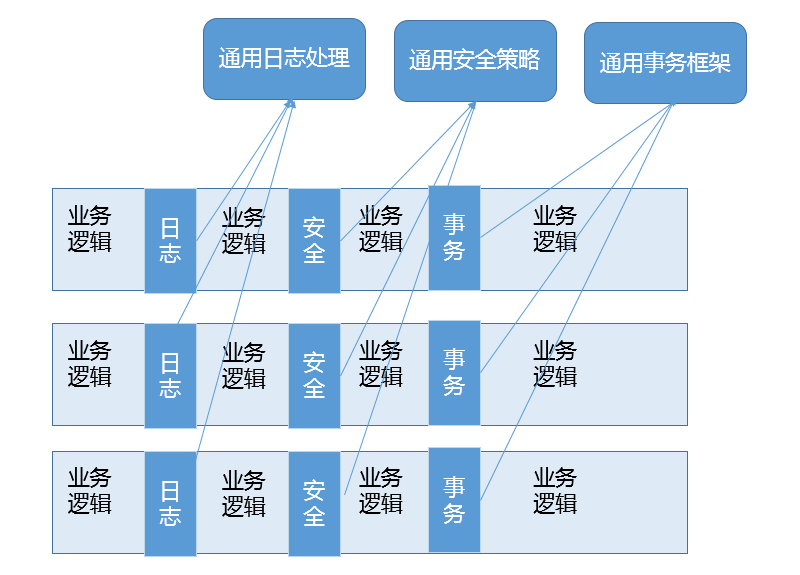

- 00 开篇词 以面试题为切入点，有效提升你的Java内功.md
- 01 谈谈你对Java平台的理解？.md
- 02 Exception和Error有什么区别？.md
- 03 谈谈final、finally、 finalize有什么不同？.md
- 04 强引用、软引用、弱引用、幻象引用有什么区别？.md
- 05 String、StringBuffer、StringBuilder有什么区别？.md
- 06 动态代理是基于什么原理？.md
- 07 int和Integer有什么区别？.md
- 08 对比Vector、ArrayList、LinkedList有何区别？.md
- 09 对比Hashtable、HashMap、TreeMap有什么不同？.md
- 10 如何保证集合是线程安全的_ ConcurrentHashMap如何实现高效地线程安全？.md
- 11 Java提供了哪些IO方式？ NIO如何实现多路复用？.md
- 12 Java有几种文件拷贝方式？哪一种最高效？.md
- 13 谈谈接口和抽象类有什么区别？.md
- 14 谈谈你知道的设计模式？.md
- 15 synchronized和ReentrantLock有什么区别呢？.md
- 16 synchronized底层如何实现？什么是锁的升级、降级？.md
- 17 一个线程两次调用start()方法会出现什么情况？.md
- 18 什么情况下Java程序会产生死锁？如何定位、修复？.md
- 19 Java并发包提供了哪些并发工具类？.md
- 20 并发包中的ConcurrentLinkedQueue和LinkedBlockingQueue有什么区别？.md
- 21 Java并发类库提供的线程池有哪几种？ 分别有什么特点？.md
- 22 AtomicInteger底层实现原理是什么？如何在自己的产品代码中应用CAS操作？.md
- 23 请介绍类加载过程，什么是双亲委派模型？.md
- 24 有哪些方法可以在运行时动态生成一个Java类？.md
- 25 谈谈JVM内存区域的划分，哪些区域可能发生OutOfMemoryError_.md
- 26 如何监控和诊断JVM堆内和堆外内存使用？.md
- 27 Java常见的垃圾收集器有哪些？.md
- 28 谈谈你的GC调优思路_.md
- 29 Java内存模型中的happen-before是什么？.md
- 30 Java程序运行在Docker等容器环境有哪些新问题？.md
- 31 你了解Java应用开发中的注入攻击吗？.md
- 32 如何写出安全的Java代码？.md
- 33 后台服务出现明显“变慢”，谈谈你的诊断思路？.md
- 34 有人说“Lambda能让Java程序慢30倍”，你怎么看？.md
- 35 JVM优化Java代码时都做了什么？.md
- 36 谈谈MySQL支持的事务隔离级别，以及悲观锁和乐观锁的原理和应用场景？.md
- 37 谈谈Spring Bean的生命周期和作用域？.md
- 38 对比Java标准NIO类库，你知道Netty是如何实现更高性能的吗？.md
- 39 谈谈常用的分布式ID的设计方案？Snowflake是否受冬令时切换影响？.md
- 周末福利 谈谈我对Java学习和面试的看法.md
- 结束语 技术没有终点.md
06 动态代理是基于什么原理？
编程语言通常有各种不同的分类角度，动态类型和静态类型就是其中一种分类角度，简单区分就是语言类型信息是在运行时检查，还是编译期检查。
与其近似的还有一个对比，就是所谓强类型和弱类型，就是不同类型变量赋值时，是否需要显式地（强制）进行类型转换。
那么，如何分类Java语言呢？通常认为，Java是静态的强类型语言，但是因为提供了类似反射等机制，也具备了部分动态类型语言的能力。
言归正传，今天我要问你的问题是，谈谈Java反射机制，动态代理是基于什么原理？
典型回答
反射机制是Java语言提供的一种基础功能，赋予程序在运行时自省（introspect，官方用语）的能力。通过反射我们可以直接操作类或者对象，比如获取某个对象的类定义，获取类声明的属性和方法，调用方法或者构造对象，甚至可以运行时修改类定义。
动态代理是一种方便运行时动态构建代理、动态处理代理方法调用的机制，很多场景都是利用类似机制做到的，比如用来包装RPC调用、面向切面的编程（AOP）。
实现动态代理的方式很多，比如JDK自身提供的动态代理，就是主要利用了上面提到的反射机制。还有其他的实现方式，比如利用传说中更高性能的字节码操作机制，类似ASM、cglib（基于ASM）、Javassist等。
考点分析
这个题目给我的第一印象是稍微有点诱导的嫌疑，可能会下意识地以为动态代理就是利用反射机制实现的，这么说也不算错但稍微有些不全面。功能才是目的，实现的方法有很多。总的来说，这道题目考察的是Java语言的另外一种基础机制： 反射，它就像是一种魔法，引入运行时自省能力，赋予了Java语言令人意外的活力，通过运行时操作元数据或对象，Java可以灵活地操作运行时才能确定的信息。而动态代理，则是延伸出来的一种广泛应用于产品开发中的技术，很多繁琐的重复编程，都可以被动态代理机制优雅地解决。
从考察知识点的角度，这道题涉及的知识点比较庞杂，所以面试官能够扩展或者深挖的内容非常多，比如：
考察你对反射机制的了解和掌握程度。
动态代理解决了什么问题，在你业务系统中的应用场景是什么？
JDK动态代理在设计和实现上与cglib等方式有什么不同，进而如何取舍？
这些考点似乎不是短短一篇文章能够囊括的，我会在知识扩展部分尽量梳理一下。
知识扩展
- 反射机制及其演进
对于Java语言的反射机制本身，如果你去看一下java.lang或java.lang.reflect包下的相关抽象，就会有一个很直观的印象了。Class、Field、Method、Constructor等，这些完全就是我们去操作类和对象的元数据对应。反射各种典型用例的编程，相信有太多文章或书籍进行过详细的介绍，我就不再赘述了，至少你需要掌握基本场景编程，这里是官方提供的参考文档：https://docs.oracle.com/javase/tutorial/reflect/index.html 。
关于反射，有一点我需要特意提一下，就是反射提供的AccessibleObject.setAccessible(boolean flag)。它的子类也大都重写了这个方法，这里的所谓accessible可以理解成修饰成员的public、protected、private，这意味着我们可以在运行时修改成员访问限制！
setAccessible的应用场景非常普遍，遍布我们的日常开发、测试、依赖注入等各种框架中。比如，在O/R Mapping框架中，我们为一个Java实体对象，运行时自动生成setter、getter的逻辑，这是加载或者持久化数据非常必要的，框架通常可以利用反射做这个事情，而不需要开发者手动写类似的重复代码。
另一个典型场景就是绕过API访问控制。我们日常开发时可能被迫要调用内部API去做些事情，比如，自定义的高性能NIO框架需要显式地释放DirectBuffer，使用反射绕开限制是一种常见办法。
但是，在Java 9以后，这个方法的使用可能会存在一些争议，因为Jigsaw项目新增的模块化系统，出于强封装性的考虑，对反射访问进行了限制。Jigsaw引入了所谓Open的概念，只有当被反射操作的模块和指定的包对反射调用者模块Open，才能使用setAccessible；否则，被认为是不合法（illegal）操作。如果我们的实体类是定义在模块里面，我们需要在模块描述符中明确声明：
module MyEntities {
// Open for reflection
opens com.mycorp to java.persistence;
}
因为反射机制使用广泛，根据社区讨论，目前，Java 9仍然保留了兼容Java 8的行为，但是很有可能在未来版本，完全启用前面提到的针对setAccessible的限制，即只有当被反射操作的模块和指定的包对反射调用者模块Open，才能使用setAccessible，我们可以使用下面参数显式设置。
--illegal-access={ permit | warn | deny }
- 动态代理
前面的问题问到了动态代理，我们一起看看，它到底是解决什么问题？
首先，它是一个代理机制。如果熟悉设计模式中的代理模式，我们会知道，代理可以看作是对调用目标的一个包装，这样我们对目标代码的调用不是直接发生的，而是通过代理完成。其实很多动态代理场景，我认为也可以看作是装饰器（Decorator）模式的应用，我会在后面的专栏设计模式主题予以补充。
通过代理可以让调用者与实现者之间解耦。比如进行RPC调用，框架内部的寻址、序列化、反序列化等，对于调用者往往是没有太大意义的，通过代理，可以提供更加友善的界面。
代理的发展经历了静态到动态的过程，源于静态代理引入的额外工作。类似早期的RMI之类古董技术，还需要rmic之类工具生成静态stub等各种文件，增加了很多繁琐的准备工作，而这又和我们的业务逻辑没有关系。利用动态代理机制，相应的stub等类，可以在运行时生成，对应的调用操作也是动态完成，极大地提高了我们的生产力。改进后的RMI已经不再需要手动去准备这些了，虽然它仍然是相对古老落后的技术，未来也许会逐步被移除。
这么说可能不够直观，我们可以看JDK动态代理的一个简单例子。下面只是加了一句print，在生产系统中，我们可以轻松扩展类似逻辑进行诊断、限流等。
public class MyDynamicProxy {
public static void main (String[] args) {
HelloImpl hello = new HelloImpl();
MyInvocationHandler handler = new MyInvocationHandler(hello);
// 构造代码实例
Hello proxyHello = (Hello) Proxy.newProxyInstance(HelloImpl.class.getClassLoader(), HelloImpl.class.getInterfaces(), handler);
// 调用代理方法
proxyHello.sayHello();
}
}
interface Hello {
void sayHello();
}
class HelloImpl implements Hello {
@Override
public void sayHello() {
System.out.println("Hello World");
}
}
class MyInvocationHandler implements InvocationHandler {
private Object target;
public MyInvocationHandler(Object target) {
this.target = target;
}
@Override
public Object invoke(Object proxy, Method method, Object[] args)
throws Throwable {
System.out.println("Invoking sayHello");
Object result = method.invoke(target, args);
return result;
}
}
上面的JDK Proxy例子，非常简单地实现了动态代理的构建和代理操作。首先，实现对应的InvocationHandler；然后，以接口Hello为纽带，为被调用目标构建代理对象，进而应用程序就可以使用代理对象间接运行调用目标的逻辑，代理为应用插入额外逻辑（这里是println）提供了便利的入口。
从API设计和实现的角度，这种实现仍然有局限性，因为它是以接口为中心的，相当于添加了一种对于被调用者没有太大意义的限制。我们实例化的是Proxy对象，而不是真正的被调用类型，这在实践中还是可能带来各种不便和能力退化。
如果被调用者没有实现接口，而我们还是希望利用动态代理机制，那么可以考虑其他方式。我们知道Spring AOP支持两种模式的动态代理，JDK Proxy或者cglib，如果我们选择cglib方式，你会发现对接口的依赖被克服了。
cglib动态代理采取的是创建目标类的子类的方式，因为是子类化，我们可以达到近似使用被调用者本身的效果。在Spring编程中，框架通常会处理这种情况，当然我们也可以显式指定。关于类似方案的实现细节，我就不再详细讨论了。
那我们在开发中怎样选择呢？我来简单对比下两种方式各自优势。
JDK Proxy的优势：
最小化依赖关系，减少依赖意味着简化开发和维护，JDK本身的支持，可能比cglib更加可靠。
平滑进行JDK版本升级，而字节码类库通常需要进行更新以保证在新版Java上能够使用。
代码实现简单。
基于类似cglib框架的优势：
有的时候调用目标可能不便实现额外接口，从某种角度看，限定调用者实现接口是有些侵入性的实践，类似cglib动态代理就没有这种限制。
只操作我们关心的类，而不必为其他相关类增加工作量。
高性能。
另外，从性能角度，我想补充几句。记得有人曾经得出结论说JDK Proxy比cglib或者Javassist慢几十倍。坦白说，不去争论具体的benchmark细节，在主流JDK版本中，JDK Proxy在典型场景可以提供对等的性能水平，数量级的差距基本上不是广泛存在的。而且，反射机制性能在现代JDK中，自身已经得到了极大的改进和优化，同时，JDK很多功能也不完全是反射，同样使用了ASM进行字节码操作。
我们在选型中，性能未必是唯一考量，可靠性、可维护性、编程工作量等往往是更主要的考虑因素，毕竟标准类库和反射编程的门槛要低得多，代码量也是更加可控的，如果我们比较下不同开源项目在动态代理开发上的投入，也能看到这一点。
动态代理应用非常广泛，虽然最初多是因为RPC等使用进入我们视线，但是动态代理的使用场景远远不仅如此，它完美符合Spring AOP等切面编程。我在后面的专栏还会进一步详细分析AOP的目的和能力。简单来说它可以看作是对OOP的一个补充，因为OOP对于跨越不同对象或类的分散、纠缠逻辑表现力不够，比如在不同模块的特定阶段做一些事情，类似日志、用户鉴权、全局性异常处理、性能监控，甚至事务处理等，你可以参考下面这张图。

AOP通过（动态）代理机制可以让开发者从这些繁琐事项中抽身出来，大幅度提高了代码的抽象程度和复用度。从逻辑上来说，我们在软件设计和实现中的类似代理，如Facade、Observer等很多设计目的，都可以通过动态代理优雅地实现。
今天我简要回顾了反射机制，谈了反射在Java语言演进中正在发生的变化，并且进一步探讨了动态代理机制和相关的切面编程，分析了其解决的问题，并探讨了生产实践中的选择考量。
一课一练
关于今天我们讨论的题目你做到心中有数了吗？留一道思考题给你，你在工作中哪些场景使用到了动态代理？相应选择了什么实现技术？选择的依据是什么？
请你在留言区写写你对这个问题的思考，我会选出经过认真思考的留言，送给你一份学习鼓励金，欢迎你与我一起讨论。
你的朋友是不是也在准备面试呢？你可以“请朋友读”，把今天的题目分享给好友，或许你能帮到他。
© 2019 - 2023 Liangliang Lee. Powered by gin and hexo-theme-book.